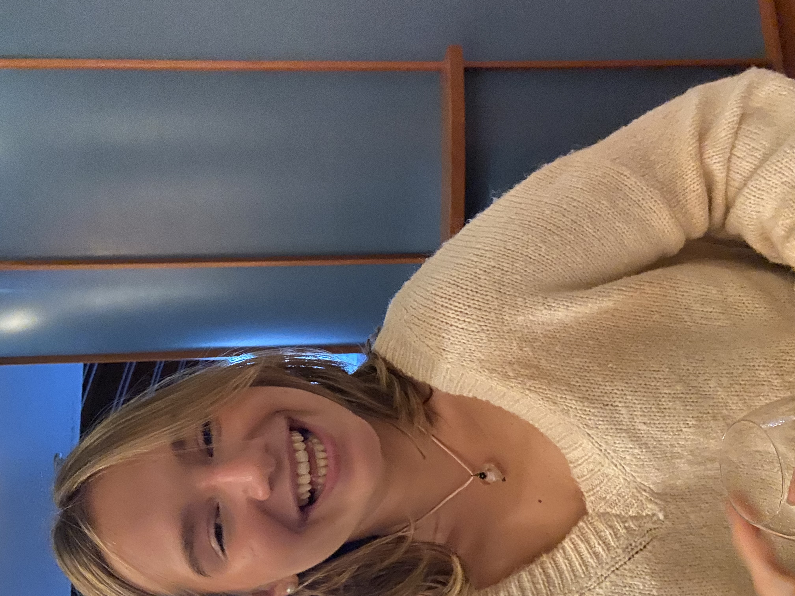

<!DOCTYPE html>
<html>
  <head>
    
    <link rel="apple-touch-icon" sizes="180x180" href="/apple-touch-icon.png">
<link rel="icon" type="image/png" sizes="32x32" href="/favicon-32x32.png">
<link rel="icon" type="image/png" sizes="16x16" href="/favicon-16x16.png">
<link rel="manifest" href="/site.webmanifest"> 
    <meta charset="utf-8">
    <link rel="stylesheet"
          href="https://fonts.googleapis.com/css?family=Tangerine">
    <style>
      body {
        font-family: 'Inconsolata', serif;
        font-size: 28px;
      }
    </style>
  </head>
  <body>
   
  </body>
</html>
<html>
   <head>
       <title> Elizabeth Reucassel's CV</title>
       <style>
  
       body {background-color:  rgb(251, 251, 251)}
       .grid {display:grid;
                   grid-template-columns: 1fr 1fr;
                   column-gap: 10px;}
       .div1 {border: solid 2px white;
               color:white;
               background-color: palevioletred;
               padding-bottom: 400px;
               border-width: 1px;
              }
       .div2 {border: solid 2px white;
               background-color: palevioletred;
               border-width: 1px;
               padding-bottom: 100px;
               color: white;}

               ul {border: none;
                display:inline-block;
                list-style:none;
                padding-left: 0;
                margin-top: 0;}
            li a {text-decoration:none;
                    background-color: palevioletred;
                    color: white;
                    display: block;
                    width: 100px;
                    padding-top: 30px;
                    padding-bottom: 30px;
                    text-align: center;
                    }
            li a:hover {
                background-color: purple;
            }
            li a.active {
                background-color: darkorchid;
            }
            li {float:left;}

            </style>
   </head>
   <body>     
    <ul>
        <ul>
            <li><a href="digitalcv.html">Home</a></li>
            <li><a class="active" href="page3.html">Education</a></li>
        </ul>
    </ul>     
       <div class="grid">
           <div class="div1">
           <h1> My Journalism Experience: </h1>
            <h3> Currently, I'm a Beauty & Wellness writer for Elon's 'The Edge Magazine'. 
                Every week I write a new article about a topic of my choosing. This can range
                anywhere from mental health issues, newest makeup trends, fashion ideas, and skincare.
                I love being able to write for them, and I encourage everyone to check The Edge out!
            </h3>
            <h3> Moving forward at the Edge, I hope to also write for their fashion deperatment
                and their travel department. There's so much outreach the magazine offers, and I'm so excited
                to be able to explore all of it. I hope to add my work to their print issue as well, so I'm really
                motivated to always give them my best work. 
            </h3>
            
            
        

        </div>